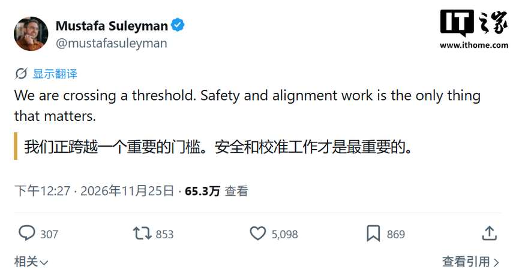
微软 AI 负责人警告：我们正跨越 AI 危险门槛，安全和对齐是当前最重要任务
四维 82 ≈ 82
微软 AI 负责人公开警告称行业正跨越 AI 危险门槛，安全与对齐应成为当前最重要的任务；这是又一位大厂 AI 掌门人在产能竞赛中途主动踩刹车。
💡 点评：「危险门槛」从安全研究者嘴里说出来不稀奇，从负责出货的大厂 AI 负责人嘴里说出来才有分量——当造车的人开始谈刹车，说明前排玩家已经摸到了同一个边界。
IT之家编者按：本份为每日两报新一期午报，覆盖昨天 18:00 ～ 今天 10:45。全页最高分是今日精选：微软 AI 负责人警告「我们正跨越 AI 危险门槛」，称安全和对齐是当前最重要任务（82）。GitHub 当日热榜 16 仓与前两日完全同榜：窗口内 7 仓有新发版（Claude-BugHunter v2.1.0、opensre 0.1.2026.11.27 等），但相关仓库 3 天内均已报过，按老仓减分口径只保留 5 条一行式。Tier 0 四家均无窗口内新节点：Apple 只有黑五促销（促销不进 Tier 0）与 iOS 28 爆料，Sony / DSH / 国内个人助手无更新（豆包工作接入剪映属办公智能体，不计入）。促销新标准（v2.5 §4-3）：命中促销/导购 25 条（黑五礼品卡与导购清单、广州车展预售价/上市价、国补到手价、众筹价等）−10 不乘系数后低于 70，全部丢弃不上页。出卡口径（评分标准 §3）：每主题前 3 名 + 全部 ≥84 出卡；锚点沿用 t-<主题>/c-<主题>-<序号> 新命名。
Tier 0 其余三家：Apple（本期无更新：窗口内仅黑五礼品卡促销与 iOS 28 通知改版爆料，无产品或系统级新节点）；Sony（本期无更新：窗口内无产品与政策新节点）；DSH（本期无更新：窗口内未见新发版与新节点）；国内个人助手（本期无更新：豆包 / 灵光 / 千问 Go! / 腾讯小微窗口内均无新节点，豆包工作接入剪映属办公智能体不计入）。

微软 AI 负责人公开警告称行业正跨越 AI 危险门槛，安全与对齐应成为当前最重要的任务；这是又一位大厂 AI 掌门人在产能竞赛中途主动踩刹车。
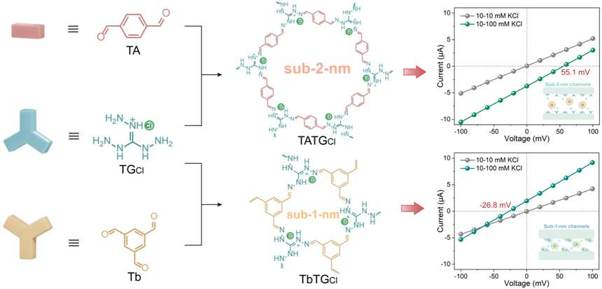
我国科学家在 COF 膜研究中发现反离子限域传质新机制，亚纳米通道可实现离子选择性反转，成果登上《科学》。
IT之家DeepSeek 灰度测试「消耗额度」功能，把单次对话的算力成本直观展示给用户，此前已对用量实施限额。
IT之家三星酝酿 SPAC 框架，计划为 Galaxy S26 等新机引入类似苹果的「私有云」计算架构。
IT之家问界发布整车一体 L3 架构，赛力斯副总裁周林称 L3 核心体验就是脱手脱眼，实车测试里程达 1100 万公里。
IT之家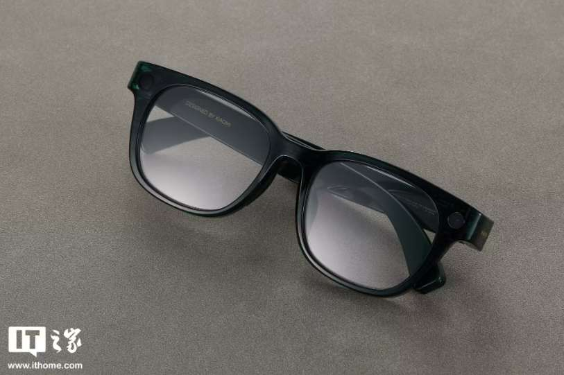
消息称小米 AI 眼镜 2 代将与小米 18 标准版同步发布，下月中旬上市。
IT之家奇瑞风云全新概念车 AURA 全球首发，搭载犀牛 S 固态电池与 L4 猎鹰驾辅技术。
IT之家服装设计师 Trish Summerville 讲述如何为新作重铸 1970 年代好莱坞风格。
Vogue时尚界向传奇超模 Veruschka 致敬，回顾她把身体当画布的先锋影像遗产。
Vogue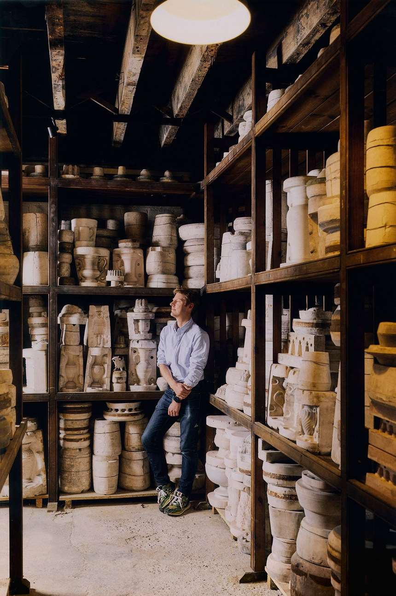
Christopher Bailey 谈离开 Burberry 后在老牌陶器厂 Burleigh 的再出发。
Vogue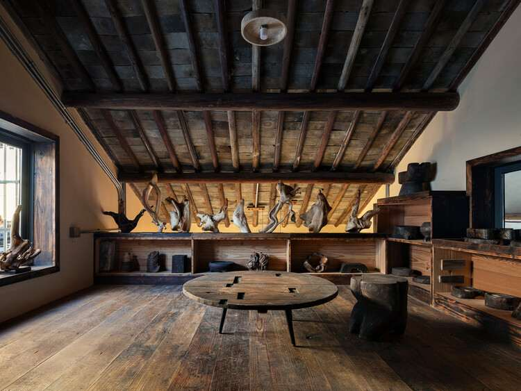
述作设计的尊里茶馆：以当代语汇转译传统茶空间，材料与光线的控制克制而精准。
ArchDaily | ArchDaily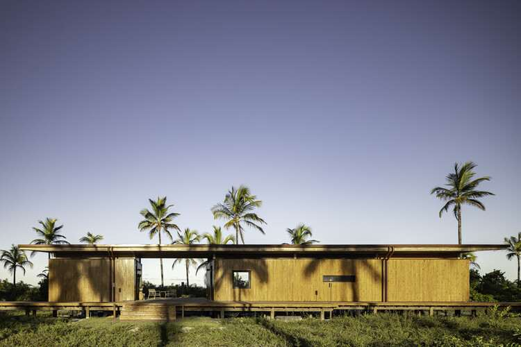
UNA Barbara e Valentim 的模块化巴伊亚项目：以预制模块体系回应热带气候与在地建造传统。
ArchDaily | ArchDaily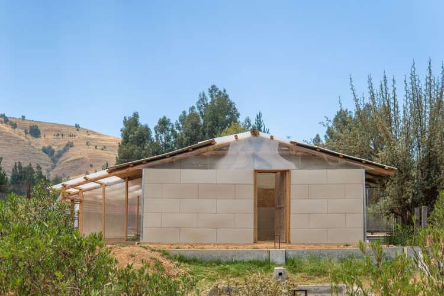
安第斯高地上的避难所 Quichuay：在海拔极端环境中以最小干预落成的高地庇护所。
ArchDaily | ArchDaily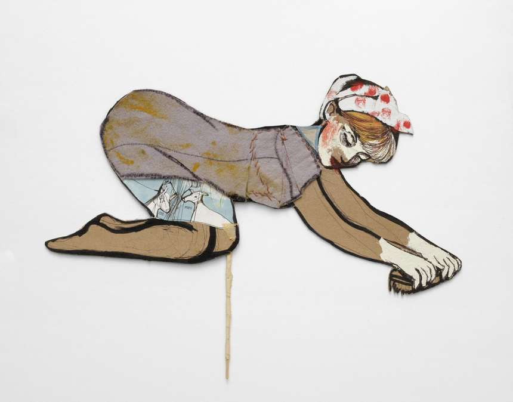
Rita Ackermann 的木偶系列作品重新展出，延续其对身体与记忆的扭曲书写。
i-d.co「Come Together」音乐摄影慈善拍卖上拍，收益用于支援巴勒斯坦。
Dazed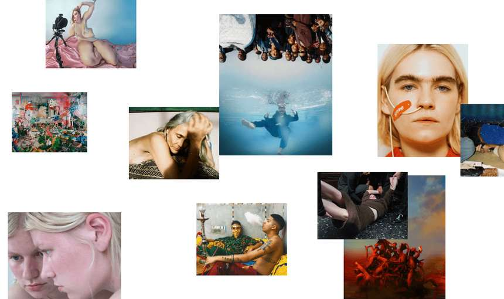
PhotoVogue 呈现「Brave New Visions：作为反叛的创造力」数字画廊。
Vogue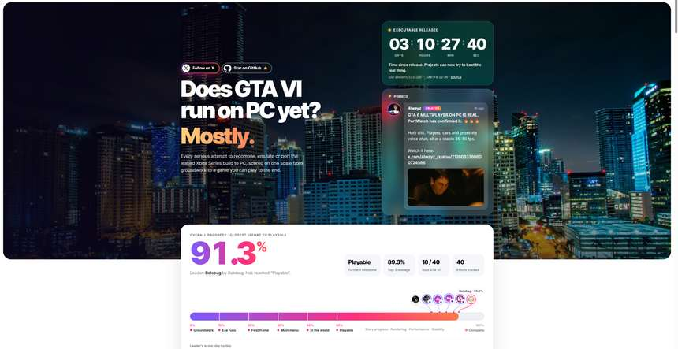
《GTA 6》209GB 泄露文件流出后，全球开发者开启民间 PC 移植竞速，最快进度已达 91.3%。
IT之家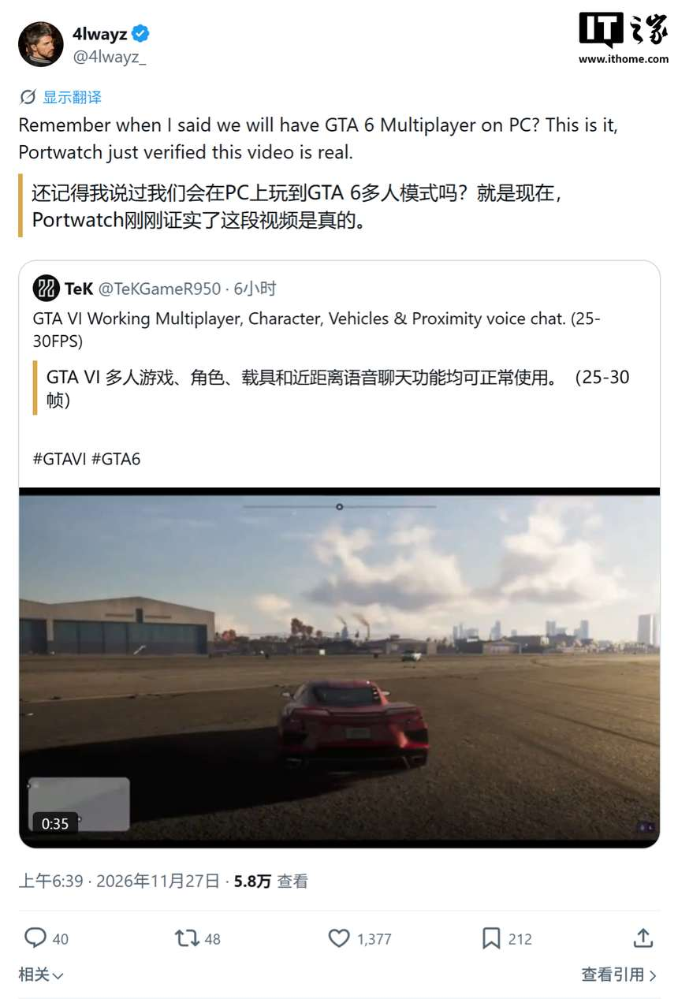
民间移植 PC 版《GTA 6》多人模式演示曝光，当前帧率约 25~30 FPS。
IT之家消息称民间移植 PC 版《GTA 6》部分游戏场景已解锁 60FPS，进展突飞猛进。
IT之家长三角高铁三线齐发，营业里程突破 8500 公里，区域轨道网进一步加密。
IT之家BRUTUS 阿拉斯加自行车露营连载第 15 回：极端荒野中的骑行与露营实录。
BRUTUS.jp | ブルータスのウェブ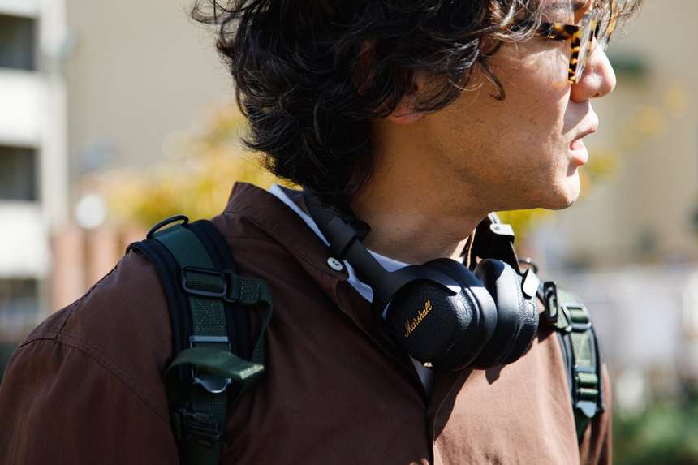
Marshall 发起「KEEP LIVE MUSIC ALIVE」计划，要把 Live House 传给下一个世代。
BRUTUS.jp | ブルータスのウェブDazed 年度盘点：Ninajirachi 与 Jane Remover 如何改写 2026 年的流行乐地形。
Dazed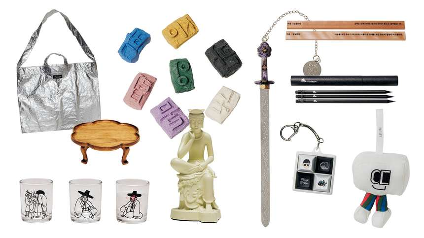
BRUTUS 精选首尔博物馆周边 12 选，从烧酒杯到菩萨迷你摆件。
BRUTUS.jp | ブルータスのウェブGitHub 当日热榜 16 仓与前两日完全同榜，全部已在去重池；窗口内 7 仓有新发版，但相关仓库 3 天内均已报过、连续上榜不享受库龄豁免，按老仓减分后取信息量足够的 5 条一行式（last30days-skill v4.7.0、AFFiNE canary.905 为小版本/内测通道，不单列）。